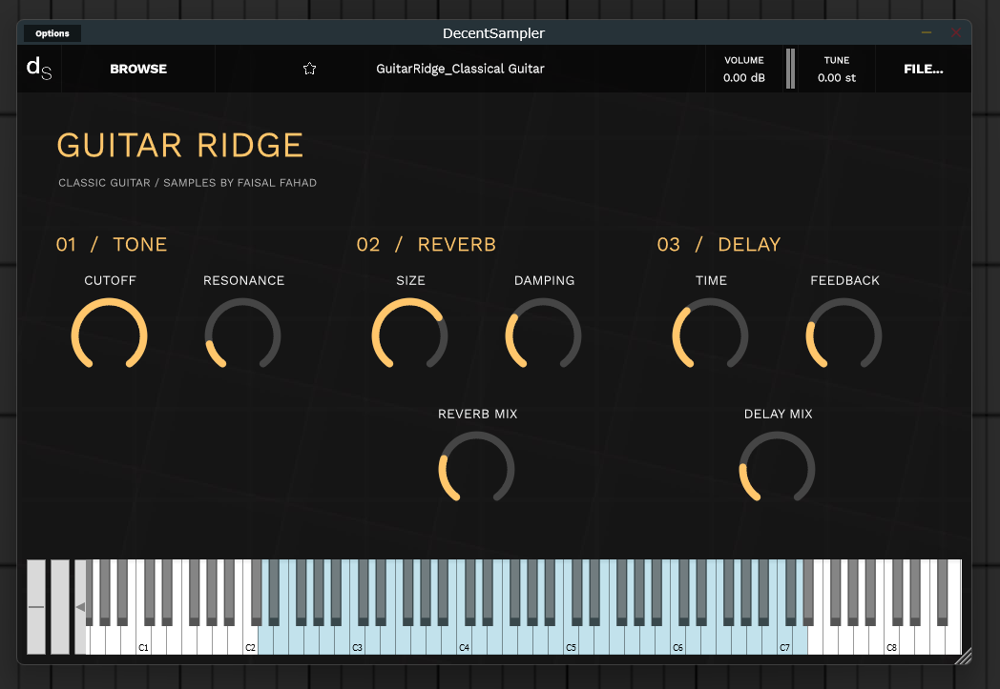
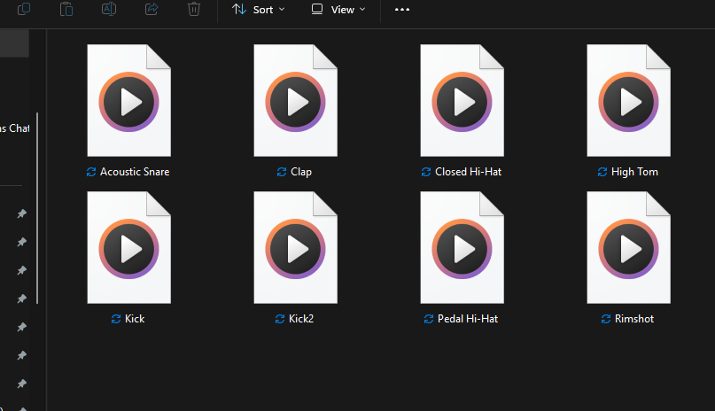
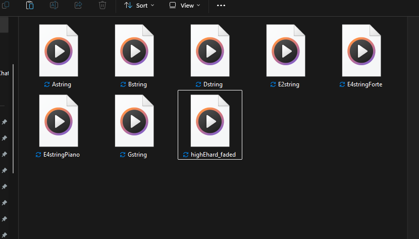
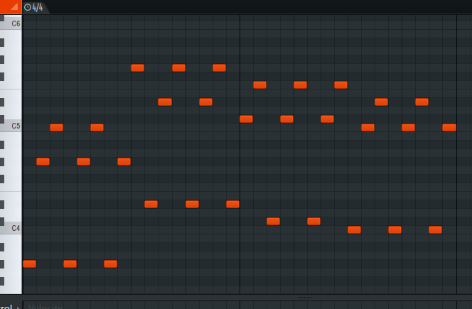
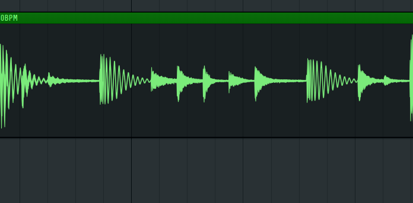
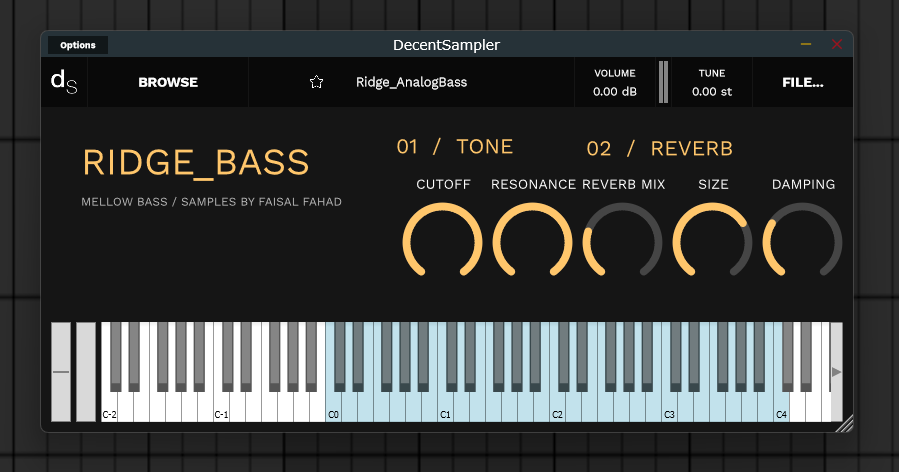

- AUTHENTIC SAMPLED INSTRUMENTS -
Include Samples, Loops, Instruments/Patches.
Basic
Contains: Synth patches, Chord samples and stabs, And drum loops.
Add to cart
Recomended
Contains: Acoustic instrument patches, Percusion loops, And instrument samples.
Add to cart
Best
Contains: Acoustic instruments, Producer essentials, And necessary samples and patches.
Add to cart
DECENT SAMPLER PATCHES
WAV SAMPLES

INSTRUMENT SAMPLES

CHORD PROGRESSIONS (MIDI AND WAV)

DRUM/PERCUSION LOOPS (MOSTLY 130-140 BPM)

**Images are for illustrational purposes and may not be included in the packs
| Contains | Producer Essentials | Acoustic Lab + | Ridge Edge + |
|---|---|---|---|
| Pack Type | HipHop, Trap, House | Acoustic | All + Extras |
| Percusion/Drum Loops | 12 | 14 | 30 |
| Instruments | Ridge_Bass(dspreset) + 6 Serum2 Patches | Ridge_AcousticBass + ClassicGuitar_Ridge + 6 Serum2 Patches | All Ridge Instruments + 14 Serum2 Patches |
| Chord Progressions | 6 | 6 | 14 |
| Instrument Loops | 6 | 8 | 18 |
| One-Shots | Drums | Guitars + Piano + Perc | All | Price | $6.99 | $9.99 | $13.99 |

Questions And Answers
Are the Ridge Samples packs compatible on all DAWs?
Answer: Yes, as long as your DAW of choice supports WAV and VSTs.
Which sampler are you using, and why?
Answer: Decent sampler, its a free sampler plugin that offers instrument creation and playing.
What formats are you using?
Answer: WAV, MIDI, and DSPRESET.
Do you record EVERY single note?
Answer: Not exactly, Essential notes (such as thirds or fifths) are recorded and pitched up depending on the patch.